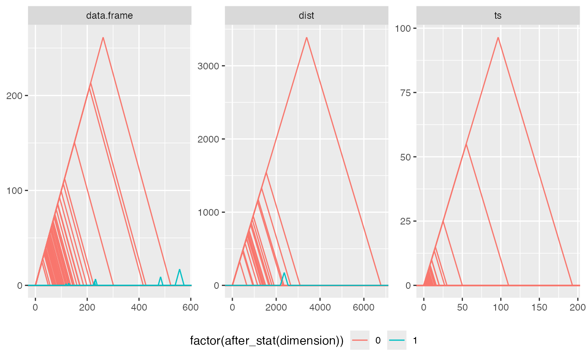

Visualize persistence data in a (flat, diagonal, or landscape) persistence diagram.
stat_persistence( mapping = NULL, data = NULL, geom = "point", position = "identity", diagram = "diagonal", na.rm = FALSE, show.legend = NA, inherit.aes = TRUE, ... ) stat_frontier( mapping = NULL, data = NULL, geom = "line", position = "identity", diagram = "diagonal", na.rm = FALSE, show.legend = NA, inherit.aes = TRUE, ... )
Arguments
| mapping | Set of aesthetic mappings created by |
|---|---|
| data | The data to be displayed in this layer. There are three options: If A A |
| geom | The geometric object to use display the data; defaults to
|
| position | Position adjustment, either as a string, or the result of a call to a position adjustment function. |
| diagram | One of |
| na.rm | Logical: if |
| show.legend | logical. Should this layer be included in the legends?
|
| inherit.aes | If |
| ... | Additional arguments passed to |
Details
Persistence diagrams are scatterplots of persistence data. Persistence landscapes can be understood as rotated diagonal persistence diagrams.
Persistence data
Persistence data encode the values of an underlying parameter \(\epsilon\) at which topological features appear ("birth") and disappear ("death"). The difference between the birth and the death of a feature is called its persistence. Whereas topological features may be of different dimensions, persistence data sets usually also include the dimension of each feature.
ggtda expects persistence data to have at least three columns: birth, death, and dimension.
Persistence diagrams
The original persistence diagrams plotted persistence against birth in what we call "flat" diagrams, but most plot death against birth in "diagonal" diagrams, often with a diagonal line indicating zero persistence.
Persistence landscapes
Persistence landscapes, anticipated by some alternative coordinatizations of persistence diagrams, were proposed as Lipschitz functions that demarcate the Pareto frontiers of persistence diagrams. They can be averaged over the diagrams obtained from multiple data sets designed or hypothesized to have been generated from the same underlying topological structure.
References
H Edelsbrunner, D Letscher, and A Zomorodian (2000) Topological persistence and simplification. Proceedings 41st Annual Symposium on Foundations of Computer Science, 454--463. doi: 10.1109/SFCS.2000.892133
H Edelsbrunner and D Morozov (2012) Persistent Homology: Theory and Practice. European Congress of Mathematics, 31--50. doi: 10.4171/120
P Bubenik (2015) Statistical Topological Data Analysis using Persistence Landscapes. Journal of Machine Learning Research, 16 77--102. http://jmlr.org/papers/v16/bubenik15a.html
F Chazal and B Michel (2017) An introduction to Topological Data Analysis: fundamental and practical aspects for data scientists. https://arxiv.org/abs/1710.04019
See also
ggplot2::layer() for additional arguments.
Other plot layers for persistence data:
barcode
Examples
#####EXAMPLE 1##### # toy example toy.data <- data.frame( birth = c(0, 0, 1, 2, 1.5), death = c(5, 3, 5, 3, 6), dim = c("0", "0", "2", "1", "1") ) # diagonal persistence diagram, coding persistence to transparency ggplot(toy.data, aes(start = birth, end = death, colour = dim, shape = dim, alpha = after_stat(persistence))) + theme_tda() + coord_equal() + stat_persistence(diagram = "diagonal", size = 3) + geom_abline(intercept = 0, slope = 1, color = "grey") + lims(x = c(0, 6), y = c(0, 6)) + guides(alpha = FALSE)# diagonal persistence diagram with frontier ggplot(toy.data, aes(start = birth, end = death, colour = dim, shape = dim)) + theme_tda() + coord_equal() + stat_persistence() + stat_frontier() + lims(x = c(0, NA), y = c(0, NA))# flat persistence diagram ggplot(toy.data, aes(start = birth, end = death, colour = dim, shape = dim)) + theme_tda() + stat_persistence(diagram = "flat") + lims(x = c(0, NA), y = c(0, NA))# landscape persistence frontier ggplot(toy.data, aes(start = birth, end = death, colour = dim, shape = dim)) + theme_tda() + coord_equal() + stat_frontier(diagram = "landscape") + lims(x = c(0, NA), y = c(0, NA))#####EXAMPLE 2##### # load library and dataset for comprehensive example library("ripserr") data("annulus2d") # noisy unit circle (Betti-1 number = 1) # calculate persistence homology and format annulus.phom <- as.data.frame(vietoris_rips(annulus2d)) annulus.phom$dimension <- as.factor(annulus.phom$dimension) # pretty flat persistence diagram ggplot(annulus.phom, aes(start = birth, end = death, shape = dimension, colour = dimension)) + stat_persistence(diagram = "flat") + theme_persist()# pretty diagonal persistence diagram ggplot(annulus.phom, aes(start = birth, end = death, shape = dimension, colour = dimension)) + stat_persistence(diagram = "diagonal") + theme_persist()# pretty landscape persistence diagram ggplot(annulus.phom, aes(start = birth, end = death, shape = dimension, colour = dimension)) + stat_frontier(diagram = "landscape") + theme_persist()